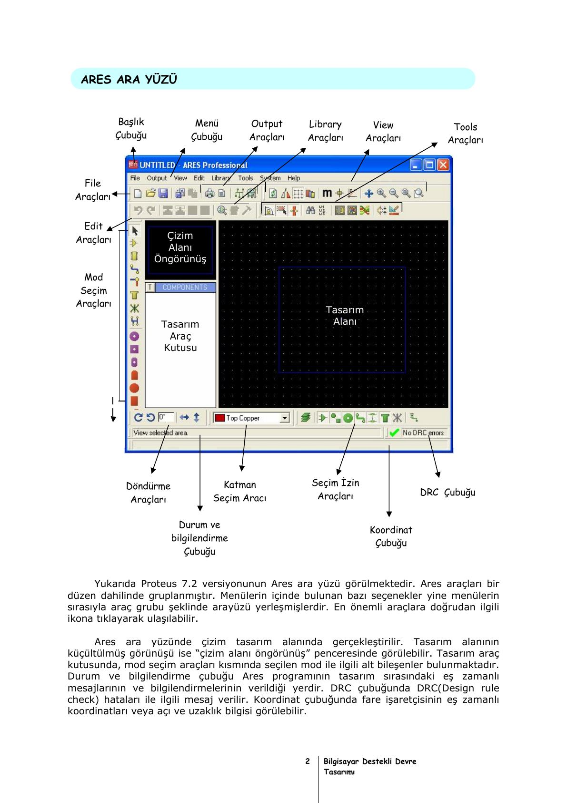

· EEM202
EEM202 Devre Teorisi II: ARES ile Baskılı Devre (PCB) Tasarımı ("Bilgisayar Destekli Devre Tasarımı" Notu)
EEM202 – Devre Teorisi II · 14.08.2009 · 16.10.2026
Bu yazı, ders klasöründe "serkut_devre" alt klasöründe saklanan, "Bilgisayar Destekli Devre Tasarımı" başlıklı bir ders notunun "D – ARES PCB Tasarım Programı" bölümünü tanıtıyor (37 sayfa, PDF Ağustos 2009; belgede yazar adı yok). Proteus 7.2'nin ARES programı anlatılıyor; EEM202'nin dönem projelerinde ve laboratuvarda Proteus kullanıldığı için klasöre konmuş. Aşağıda bölümün içeriği başlıklar ve ana noktalarla özetlendi; orijinal PDF yazının sonunda indirilebilir.
Bu içerik üçüncü taraf bir kaynağa aittir; arşiv ve nostalji amacıyla kaynak belirtilerek paylaşılmıştır. Hak sahibinin talebi hâlinde kaldırılır.
PCB tasarımında dikkat edilecek kurallar
- PCB'si çıkarılacak devre için eleman boyutları önceden bilinmeli, tasarım bu boyutlara göre yapılmalıdır. PCB bir kutuya yerleşecekse kutunun ölçüleri de göz önünde bulundurulmalıdır.
- Yüksek frekanslı devrelerde bobinler yan yana konmamalı; paralel yolların kapasitif etki yapacağı unutulmamalıdır.
- Yüksek güç elemanlarında soğutucu için yer ayrılmalıdır.
- Tamir sırasında elemanlar kolayca sökülüp takılabilmelidir.
- Bakır yollar taşıyacakları akıma göre kalın ya da ince çizilmelidir (1 A için 2,5 mm yol kalınlığı gibi).
- Mümkün olduğu kadar küçük boyutlu ve düşük maliyetli bir devre çizilmelidir.
ARES'in genel tanıtımı
ARES (Advanced Routing and Editing Software), Proteus paketinin PCB tasarımı yapılan alt paketidir:
- Çift katlı ve en fazla 16 katlı PCB çizebilir; 10 m²'ye kadar plaket boyutu ayarlanabilir.
- Otomatik PCB hazırlayabilir, bağlantılardaki hataların raporunu çıkarabilir.
- İki boyutlu sembol kütüphanesi ve SMD sembolleri vardır; yeni eleman hazırlanabilir.
- Sınırsız pad, yol (track) ve geçiş deliği (via) kullanılabilir; çeşitli grafik biçimlerinde çıktı alınabilir.
Arayüzde başlık ve menü çubuğu, File/Output/View/Edit/Library/Tools araç grupları, tasarım alanı ve küçültülmüş öngörünüş penceresi, mod seçim araçları ve tasarım araç kutusu, döndürme ve katman seçim araçları, DRC (Design Rule Check) çubuğu, durum ve koordinat çubukları bulunur.

Menüler
- File: New/Load/Save Layout, netlist yükleme-kaydetme-silme, DXF ve bitmap içe aktarma, bölge içe-dışa aktarma, Board Statistics (yol, pad, via sayıları ve kart ölçüsü).
- Output: yazdırma (Artwork, Solder resist, SMT mask, Drill plot modları ve ayna görüntüsü), çıktı alanı ve orijini, bitmap/metafile/DXF/EPS dışa aktarma, üretim notları, CAD-CAM (Gerber) çıktısı ve Gerber görüntüleyici, 3B görünüm, yerleştirme (pick and place, PKP) ve test noktası (TPI) dosyaları.
- View: yeniden çizim, ters çevirme (flip), ızgara, katmanlar, metrik/inç (thou) geçişi (1 inç = 1000 th, 1 mm ≈ 40 th), geçici orijin, Z-Theta ile uzaklık ve açı ölçümü, Goto XY/Component/Pin, Snap (1–5–25–50 th), Pan ve Zoom.
- Edit: geri al/yinele, pano işlemleri, hizalama, çoğaltma (Replicate), öne-arkaya alma, via'ları pad'e çevirme.
- Library: sembol ve paket oluşturma (Make Symbol, Make Package), ayrıştırma (Decompose), kütüphaneye derleme, kütüphane yöneticisi, yeni pad/yol/via stilleri.
- Tools: yol açısı kilidi, otomatik yol seçimi ve daraltma, bölge yenileme, Design Rule Checker, arama ve işaretleme, otomatik adlandırma, Auto Placer (otomatik yerleştirme), Auto Router (otomatik yönlendirme), Gateswap Optimizer, güç düzlemi üretici, yeniden numaralandırma, bağlantı denetleyici, Electra Auto Router.
- System: renkler, varsayılan tasarım kuralları, ortam, seçim filtresi, klavye kısayolları, ızgaralar, katman kullanımı ve çiftleri, yollar, çizici kalemleri, stratejiler, şablon, çalışma alanı, bölgeler.
Ardından aynı işlevlerin araç çubuklarındaki karşılıkları (File, Output, View, Edit, Library, Tools, mod seçim, döndürme, katman seçim ve seçim izin araçları) tek tek gösteriliyor.
Kütüphane ve eleman oluşturma
ARES kütüphanesi paket kütüphanesi (elektronik elemanların PCB karşılıkları) ve sembol kütüphanesinden (diğer iki boyutlu çizimler) oluşur.
- Uygulama 1: 400 th × 400 th'lik bir kare, köşegenleri ve 250 th yarıçaplı bir yaydan oluşan çizim seçilir, Library → Make Symbol ile "SEMBOL1" adıyla USERSYM kütüphanesine eklenir ve yeni bir sayfada "2D graphics Symbol mode" ile çağrılarak denetlenir.
- Uygulama 2: ISIS'teki LED sembolünün PCB paket karşılığı yoktur. ISIS'te Packaging Tool ile ARES'teki "led" paketi eklenir, sembolün A ve K uçları paketin A ve K pad'leriyle eşleştirilir, Assign Packages ile USERDVC kütüphanesine kaydedilir.
- Uygulama 3: Elimizdeki bir butonun ölçüleri cetvelle alınır (12 mm gövde, 1 mm ayak kalınlığı); metrik birime ve 1 mm snap'e geçilir, Top Silk katmanında 12 mm'lik kare ve 8 mm çaplı çember çizilir, 1 mm ayak için iç çapı 40 th olan C-90-40 pad stiliyle (dış çap 90 th ≈ 2,25 mm) dört pad yerleştirilip numaralandırılır ve paket olarak kaydedilir; ISIS'teki buton sembolüyle bağlanır.
Baskılı devre tasarım uygulamaları
- Uygulama 4: Board Edge katmanında 25 mm × 25 mm'lik kart sınırı çizilir; pad, yol ve via yerleştirme ve iki pad'i yolla bağlama.
- Uygulama 5: Çizili yolların ve via'ların düzenlenmesi (sağ tık menüsü, trim komutları), pad ve iki boyutlu şekillerin düzenlenmesi; dönüşlerde yol yumuşatma (mitre).
- Uygulama 6: Seçili çizimin sağ tık genel düzenleme menüsü: döndürme, X/Y aynalama, Block Copy/Move/Rotate/Delete, panoya kesme-kopyalama, seçimi iptal, seçili bileşenlerden paket (Make Package) veya sembol (Make 2D Graphics Symbol) oluşturma.
- Uygulama 7: Otomatik çizim kullanmadan, el ile tek yüzlü PCB tasarımı: CNY70 optik sensörü için C-70-30 pad'li paket ve ISIS sembolü hazırlanıp pinler 1-A, 2-K, 3-C, 4-E olarak eşleştirilir; ISIS'te çizilen devre "netlist transfer to Ares" ile ARES'e aktarılır, Board Edge katmanında yaklaşık 25 mm × 40 mm'lik kart sınırı çizilir, elemanlar 5 mm aralıkla yerleştirilir (CNY70 bakır yüzde, ayna görüntüsüyle), köşelere M3 vida delikleri konur ve Bottom Copper katmanında pad'ler yollarla bağlanır.
- Uygulama 8: Otomatik yönlendirmeyle çift yüzlü PCB: ISIS'te bir triyak kontrol devresi çizilir (her elemanın PCB karşılığı olduğundan emin olunarak), ARES'e aktarılıp otomatik yerleştirme ve yönlendirmeyle kart tasarlanır.
İndirilebilir dosya
37 sayfalık orijinal PDF aşağıdan indirilebilir.